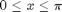
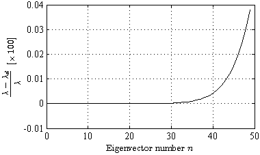
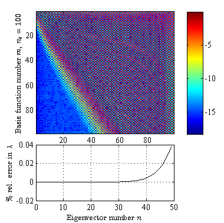
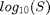

Constrained Basis Functions in a Sturm-Liouville Problem
This script demonstrates the application of constrained basis functions to the solution of the simplest Sturm-Liouville problem, This script is very simular to the script SturmLiouville1 presented in the ODEBox, see:
However, here dopGenConstrained is used to generate the basis functions on one set of nodes and to constrain the solutions on points outside the range.
(c) 2013 Paul O'Leary and Matthew Harker Institute for Automation University of Leoben A-8700 Leoben Austria
URL: automation.unileoben.ac.at Email: office@harkeroleary.org
Contents
- Define and Generate the Nodes
- Generate the Local Differential Operator
- Define the Constraints
- Generate the Admissible Functions
- Setup the Linear Differential Operator
- Solve the Eigenvalue Problem
- Compute the Solution Vectors
- Compute the Analytical Solution for the Eigenvalues
- Compare the Analytical and Discrete Solutions
- Plot the Results
- Remarkable Result.
clear all; close all; setUpGraphics;
Define and Generate the Nodes
Define the number of nodes and the number of basis functions used.
noPts = 200; noBfs = 100;
Compute the Chebyshev points, but scaled to form a closed interval . Note the use of the Chebyshev points.
x = dopNodes( noPts, 'cheby' );
x = pi * (x + 1)/2;
Generate the Local Differential Operator
Generate a local differential operator
ls = 13; D = dopDiffLocal( x, ls, ls );
Define the Constraints
t1 = [0,0,0];
t2 = [0,pi,0];
%
T = [t1; t2];
Generate the Admissible Functions
Generate the constrained basis functionsusing a local approximation for M.
[~, Bc, S] = dopGenConstrained( x, noBfs, T, ls, ls );
Using a local approx for M
Setup the Linear Differential Operator
L = - Bc' * D * D * Bc;
Solve the Eigenvalue Problem
[Vec, Val] = eig( L ); vals = diag( Val );
Sort the solutions
[vals, inds] = sort(vals); Vec = Vec(:,inds);
Compute the Solution Vectors
Compute the corresponding Eigenfunctions
sols = Bc * Vec ;
Compute the Analytical Solution for the Eigenvalues
noV = length(vals); n = [1:noV]'; valsT = n.^2;
Compare the Analytical and Discrete Solutions
compute the relative error for the first 1/2 of the solutions
noBfst = 50; relErr = 100*(valsT(1:noBfst) - vals(1:noBfst))./valsT(1:noBfst);
Plot the Results
setUpGraphics(10) FigureSize=[1 1 10 6]; set(0,'DefaultFigureUnits','centimeters'); set(0,'DefaultFigurePosition',FigureSize); set(0,'DefaultFigurePaperUnits','centimeters'); set(0,'DefaultFigurePaperPosition',FigureSize); MyAxesPosition=[0.18 0.17 0.8 0.8]; set(0,'DefaultaxesPosition',MyAxesPosition); % xScale = 0:(length(relErr)-1); fig1 = figure; plot(xScale, relErr , 'k'); range = axis; xlabel('Eigenvector number $$n$$'); ylabel('$$\frac{\lambda - \lambda_d}{\lambda} \, \, \, [ \times \, 100]$$'); grid on; %axis([0,noBfs,-0.1,0.1]); %
setUpGraphics(10) FigureSize=[1 1 10 10]; set(0,'DefaultFigureUnits','centimeters'); set(0,'DefaultFigurePosition',FigureSize); set(0,'DefaultFigurePaperUnits','centimeters'); set(0,'DefaultFigurePaperPosition',FigureSize); MyAxesPosition=[0.16 0.17 0.8 0.8]; set(0,'DefaultaxesPosition',MyAxesPosition); % fig2 = figure; P1 = [0.16 0.4 0.8 0.55] ; A = axes('position',P1); imagesc( log10(abs(Vec) )); colorbar; ylabel(['Basis function number $$m$$, $$n_b = ',int2str(noBfs),'$$']); P2 = [0.16 0.1 0.615 0.25] ; A = axes('position',P2); plot(xScale, relErr , 'k'); range = axis; %axis([0,noBfs,-0.1,0.1]); grid on; xlabel('Eigenvector number $$n$$'); ylabel('$$\%$$ rel. error in $$\lambda$$');
Rayleigh-Ritz spectrum of the eigenfunctions with respect to the admissible functions and the relationship to the relative error in the eigenvalue. The spectrum is scaled by , this geives an estimate for the number of significant digits are available and used to compute an eigenfunction.
Remarkable Result.
It is quite remarkable that given n = 200 points, that it is possible to compute the first m = 50 eigenvalue with an error smaller than 0.04 %. This compares very favorably with other results presented in linterture.